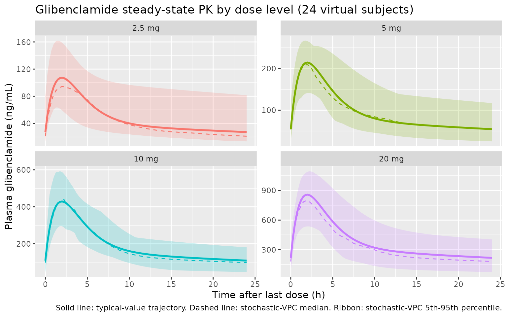

Rambiritch_2016_glibenclamide
Source:vignettes/articles/Rambiritch_2016_glibenclamide.Rmd
Rambiritch_2016_glibenclamide.RmdModel and source
mod_obj <- rxode2::rxode2(readModelDb("Rambiritch_2016_glibenclamide"))- Citation: Rambiritch V, Naidoo P, Maharaj B, Pillai G. Population pharmacokinetic modeling of glibenclamide in poorly controlled South African type 2 diabetic subjects. Clin Pharmacol (Auckl). 2016 Jul 12;8:83-92. doi:10.2147/CPAA.S102676
- Description: Two-compartment population PK model with first-order oral absorption for glibenclamide in poorly controlled South African adults with type 2 diabetes (Rambiritch 2016). All disposition parameters are apparent (CL/F, Vc/F, Vp/F, Q/F); F is not estimated. Concentration data were log-transformed prior to NONMEM fitting (LTBS), giving an effectively proportional residual error in linear space. No covariate effects were retained in the final model.
- Article: https://doi.org/10.2147/CPAA.S102676
This vignette validates the
Rambiritch_2016_glibenclamide packaged model by
re-simulating the original study design (oral glibenclamide 2.5, 5, 10,
and 20 mg once-daily, sampled at steady state at each dose level) on a
virtual cohort matched to the published Table 1 demographics, and
comparing the simulated noncompartmental Cmax, Tmax, and steady-state
AUC against the per-dose values reported in Rambiritch 2016 Table 2.
Population
Rambiritch et al. 2016 fit a two-compartment population PK model with first-order oral absorption to 841 plasma glibenclamide observations from 24 poorly controlled South-African adults with type 2 diabetes mellitus, recruited at the University of KwaZulu-Natal / RK Khan Regional Hospital (Chatsworth, South Africa). Subjects received glibenclamide orally at 0, 2.5, 5, 10, and 20 mg/day, with the dose level escalated at two-week intervals; sampling was performed after steady state was reached at each level (post-breakfast at 0, 30, 60, 90, 120 min and post-lunch at 240, 270, 300, 330, 360, 420 min on days 14, 28, 42, 56, and 70 respectively). Mean (SD) baseline characteristics from Table 1 were: age 54 (9) years (range 39-73), weight 71.1 (14.1) kg (range 42.0-107.8), height 156 (9.0) cm, BMI 29.93 (6.71) kg/m^2, fasting blood glucose 15.4 (3.8) mmol/L (poorly controlled diabetes), HbA1c 13.9 (6.9) %, creatinine 64.1 (10.4) umol/L (within normal range; cohort assumed to have normal renal function), and duration of diabetes 12.6 (10.0) years. Twenty (20) of the 24 subjects (83%) were female. Four subjects (IDs 14, 16, 20, 24) had partial profiles per Methods.
The same metadata is available programmatically:
str(mod_obj$population, vec.len = 2, no.list = TRUE)
#> $ species : chr "human"
#> $ n_subjects : num 24
#> $ n_studies : num 1
#> $ age_range : chr "39-73 years (mean 54, SD 9)"
#> $ age_median : NULL
#> $ weight_range : chr "42.0-107.8 kg (mean 71.1, SD 14.1)"
#> $ weight_median : NULL
#> $ sex_female_pct : num 91
#> $ race_ethnicity : chr "South African (race not stratified in source); cohort recruited at the University of KwaZulu-Natal / RK Khan Re"| __truncated__
#> $ disease_state : chr "Poorly controlled type 2 diabetes mellitus (mean fasting blood glucose 15.4 mmol/L; mean HbA1c 13.9%); requirin"| __truncated__
#> $ dose_range : chr "Glibenclamide 0, 2.5, 5, 10, and 20 mg orally once daily; dose levels escalated at 2-week intervals; sampling p"| __truncated__
#> $ regions : chr "South Africa (Durban / Chatsworth)"
#> $ sampling_design: chr "Per dose level (days 14, 28, 42, 56, and 70 for 0, 2.5, 5, 10, and 20 mg respectively): post-breakfast samples "| __truncated__
#> $ notes : chr "Baseline demographics in Table 1 of Rambiritch 2016. Twenty (20) of 24 enrolled subjects were female. Mean crea"| __truncated__Source trace
Per-parameter origin is recorded next to each ini()
entry in
inst/modeldb/specificDrugs/Rambiritch_2016_glibenclamide.R.
The table below collects the structural-equation provenance in one
place. All numeric parameter values come from Rambiritch 2016 Table 3
(“Final two-compartment model” column).
| Equation / parameter | Value | Source location |
|---|---|---|
lka (Ka, 1/h) |
log(0.53) | Rambiritch 2016 Table 3 (“Final two-compartment”, Ka) |
lcl (CL/F, L/h) |
log(2.16) | Rambiritch 2016 Table 3 (“Final two-compartment”, CL/F) |
lvc (Vc/F, L) |
log(11.70) | Rambiritch 2016 Table 3 (“Final two-compartment”, V2/F; paper labels the central volume V2/F) |
lq (Q/F, L/h) |
log(3.84) | Rambiritch 2016 Table 3 (“Final two-compartment”, Q/F) |
lvp (Vp/F, L) |
log(68.10) | Rambiritch 2016 Table 3 (“Final two-compartment”, V3/F; paper labels the peripheral volume V3/F) |
lfdepot (F) |
fixed(log(1)) | Apparent parameterisation (CL/F, V/F, Q/F): F not separately estimated; standard log(1) FIXED anchor |
etalka ~ 0.0816 |
BSV 28.57% CV | Rambiritch 2016 Table 3 (BSV column); omega^2 = 0.2857^2 |
etalcl ~ 0.1150 |
BSV 33.91% CV | Rambiritch 2016 Table 3 (BSV column); omega^2 = 0.3391^2 |
etalvc ~ 0.0531 |
BSV 23.04% CV | Rambiritch 2016 Table 3 (BSV column); omega^2 = 0.2304^2 |
etalq ~ 0.4271 |
BSV 65.35% CV | Rambiritch 2016 Table 3 (BSV column); omega^2 = 0.6535^2 |
no eta on lvp
|
BSV 0.02% CV | Rambiritch 2016 Table 3 (BSV column); Table 4 lists V3/F = 68.10 L for every subject -> omega_V3 effectively constrained to zero |
propSd = 0.4347 (LTBS-equiv) |
variance 0.189 (43.5% CV) | Rambiritch 2016 Table 3 (“Residual variability variance”); LTBS additive on log-scale ~ proportional in linear space; sqrt(0.189) = 0.4347 |
ODE for central
|
n/a | Rambiritch 2016 Figure 1 model equations: dA1/dt = Ka * Dose + K21 * A2 - (CL/V1 + K12) * A1 |
ODE for peripheral1
|
n/a | Rambiritch 2016 Figure 1: dA2/dt = K12 * A1 - K21 * A2 |
| Concentration in ng/mL | * 1000 scaling | Cc = (central / vc) * 1000; Rambiritch 2016 Table 2 reports Cmax in ng/mL and AUCinf in ng*h/mL |
Residual error model prop
|
(1 + epsilon) | Rambiritch 2016 Methods Eq 2 and Methods paragraph: data log-transformed prior to fitting |
Virtual cohort
The virtual cohort approximates the published Table 1 demographics: 24 subjects, mean (SD) weight 71.1 (14.1) kg (truncated below at 42 kg, the observed minimum), 20 of 24 female (83%). Body weight is included for cohort descriptive purposes only; the source model has no body-weight covariate effect. Each subject is dosed once daily at four dose levels (2.5, 5, 10, 20 mg). The 0 mg level reported in Table 2 is the placebo phase (no drug administered) and is omitted from the simulation.
set.seed(20260510)
n_subj <- 24
mean_wt <- 71.1
sd_wt <- 14.1
dose_levels <- c(2.5, 5, 10, 20) # mg
cohort <- tibble::tibble(
id = seq_len(n_subj),
WT = pmax(42, rnorm(n_subj, mean_wt, sd_wt)),
SEXF = as.integer(seq_len(n_subj) <= 20) # first 20 female (83%), remaining male
)
cohort_summary <- cohort |>
summarise(n_male = sum(SEXF == 0), n_female = sum(SEXF == 1),
wt_mean = mean(WT), wt_sd = sd(WT))
knitr::kable(cohort_summary, digits = 1,
caption = "Virtual-cohort demographic summary.")| n_male | n_female | wt_mean | wt_sd |
|---|---|---|---|
| 4 | 20 | 72 | 17.9 |
Simulation
Each subject receives 14 daily oral doses (one every 24 h, total 14
doses at times 0, 24, …, 312 h) at each dose level, which is sufficient
to reach steady state given the published terminal half-life of ~4-8 h.
Concentrations are sampled at the paper’s protocol times relative to the
last dose: the post-breakfast set (0, 0.5, 1, 1.5, 2 h) and the
post-lunch set (4, 4.5, 5, 5.5, 6, 7 h). To make the cohorts disjoint
per dose level (so PKNCA can group cleanly), each (subject x dose) pair
is given a unique simulation id via
id_offset.
n_doses <- 14
ii <- 24 # h
last_dose_t <- (n_doses - 1) * ii # 312 h
sample_rel <- c(0, 0.5, 1, 1.5, 2, # post-breakfast (0-120 min)
4, 4.5, 5, 5.5, 6, 7) # post-lunch (240-420 min)
plot_grid <- seq(0, 24, by = 0.25)
sample_t <- last_dose_t + sort(unique(c(sample_rel, plot_grid)))
make_dose_cohort <- function(cohort, dose_mg, id_offset) {
cohort |>
mutate(id = id + id_offset, treatment = sprintf("%g mg", dose_mg)) |>
rowwise() |>
do({
one <- .
dose_rows <- tibble::tibble(
id = one$id,
time = seq(0, last_dose_t, by = ii),
amt = dose_mg,
evid = 1L,
cmt = "depot",
WT = one$WT,
SEXF = one$SEXF,
treatment = one$treatment
)
obs_rows <- tibble::tibble(
id = one$id,
time = sample_t,
amt = 0,
evid = 0L,
cmt = "Cc",
WT = one$WT,
SEXF = one$SEXF,
treatment = one$treatment
)
bind_rows(dose_rows, obs_rows)
}) |>
ungroup()
}
events <- bind_rows(
make_dose_cohort(cohort, 2.5, id_offset = 0L),
make_dose_cohort(cohort, 5, id_offset = 100L),
make_dose_cohort(cohort, 10, id_offset = 200L),
make_dose_cohort(cohort, 20, id_offset = 300L)
) |>
arrange(id, time, evid)
stopifnot(!anyDuplicated(unique(events[, c("id", "time", "evid")])))
sim_vpc <- rxode2::rxSolve(
mod_obj,
events = events,
keep = c("WT", "SEXF", "treatment")
) |>
as.data.frame()
mod_typical <- mod_obj |> rxode2::zeroRe()
sim_typ <- rxode2::rxSolve(
mod_typical,
events = events,
keep = c("WT", "SEXF", "treatment")
) |>
as.data.frame()Steady-state concentration-time profile by dose
Time after the last (14th) dose. The typical-value (population-mean) trajectory overlays the 5th, 50th, and 95th percentiles of the stochastic VPC. Linear scaling of Cmax with dose is the key feature reported in Rambiritch 2016 Results paragraph 2 (“there is a linearity between AUC … of glibenclamide with increasing doses. The corresponding values of Cmax also increased linearly”).
plot_typ <- sim_typ |>
mutate(tad = time - last_dose_t) |>
filter(tad >= 0, tad <= 24) |>
mutate(treatment = factor(treatment,
levels = c("2.5 mg", "5 mg", "10 mg", "20 mg")))
plot_vpc <- sim_vpc |>
mutate(tad = time - last_dose_t) |>
filter(tad >= 0, tad <= 24) |>
group_by(treatment, tad) |>
summarise(
Q05 = quantile(Cc, 0.05, na.rm = TRUE),
Q50 = quantile(Cc, 0.50, na.rm = TRUE),
Q95 = quantile(Cc, 0.95, na.rm = TRUE),
.groups = "drop"
) |>
mutate(treatment = factor(treatment,
levels = c("2.5 mg", "5 mg", "10 mg", "20 mg")))
ggplot() +
geom_ribbon(data = plot_vpc,
aes(x = tad, ymin = Q05, ymax = Q95, fill = treatment),
alpha = 0.20) +
geom_line(data = plot_vpc, aes(x = tad, y = Q50, color = treatment),
linetype = "dashed") +
geom_line(data = plot_typ |>
group_by(treatment, tad) |>
summarise(Cc = mean(Cc), .groups = "drop"),
aes(x = tad, y = Cc, color = treatment), linewidth = 1.0) +
facet_wrap(~treatment, scales = "free_y") +
labs(x = "Time after last dose (h)", y = "Plasma glibenclamide (ng/mL)",
title = "Glibenclamide steady-state PK by dose level (24 virtual subjects)",
caption = paste("Solid line: typical-value trajectory.",
"Dashed line: stochastic-VPC median.",
"Ribbon: stochastic-VPC 5th-95th percentile.")) +
guides(color = "none", fill = "none")
PKNCA validation
PKNCA computes Cmax, Tmax, and AUC over the steady-state 24-h dosing
interval (time after the 14th dose, i.e. simulation times 312 to 336 h).
The formula groups by treatment + id so per-dose summaries
are produced. AUC0-tau (auclast over [0, 24]) is reported
here as the closest unambiguous comparator to the source paper’s
per-dose AUCinf (the source NCA was performed on individual
dosing-interval profiles after at least 14 days of the same dose level,
i.e. effectively at steady state).
sim_for_nca <- sim_vpc |>
mutate(tad = time - last_dose_t) |>
filter(tad >= 0, tad <= 24)
conc_in <- sim_for_nca |>
select(id, time = tad, Cc, treatment) |>
filter(!is.na(Cc))
dose_in <- events |>
filter(evid == 1, time == last_dose_t) |>
mutate(time = 0) |>
select(id, time, amt, treatment)
conc_obj <- PKNCA::PKNCAconc(conc_in, Cc ~ time | treatment + id,
concu = "ng/mL", timeu = "h")
dose_obj <- PKNCA::PKNCAdose(dose_in, amt ~ time | treatment + id,
doseu = "mg")
intervals_ss <- data.frame(
start = 0, end = 24,
cmax = TRUE, tmax = TRUE, auclast = TRUE
)
nca_res <- PKNCA::pk.nca(
PKNCA::PKNCAdata(conc_obj, dose_obj, intervals = intervals_ss)
)
nca_tbl <- as.data.frame(nca_res$result) |>
filter(PPTESTCD %in% c("cmax", "tmax", "auclast")) |>
group_by(treatment, PPTESTCD) |>
summarise(
median = median(PPORRES, na.rm = TRUE),
p05 = quantile(PPORRES, 0.05, na.rm = TRUE),
p95 = quantile(PPORRES, 0.95, na.rm = TRUE),
.groups = "drop"
)
nca_tbl |>
arrange(factor(treatment, levels = c("2.5 mg", "5 mg", "10 mg", "20 mg")),
PPTESTCD) |>
knitr::kable(
digits = c(NA, NA, 1, 1, 1),
caption = paste("Steady-state NCA summary (n =", n_subj,
"virtual subjects per dose).",
"AUClast in ng*h/mL; Cmax in ng/mL; Tmax in h.")
)| treatment | PPTESTCD | median | p05 | p95 |
|---|---|---|---|---|
| 2.5 mg | auclast | 1093.7 | 636.5 | 2459.7 |
| 2.5 mg | cmax | 94.4 | 64.1 | 162.0 |
| 2.5 mg | tmax | 2.0 | 1.2 | 3.0 |
| 5 mg | auclast | 2194.7 | 1386.5 | 3825.8 |
| 5 mg | cmax | 214.5 | 141.4 | 267.2 |
| 5 mg | tmax | 1.8 | 1.2 | 2.9 |
| 10 mg | auclast | 4646.4 | 2957.1 | 6729.6 |
| 10 mg | cmax | 440.5 | 302.7 | 597.0 |
| 10 mg | tmax | 2.0 | 1.3 | 2.5 |
| 20 mg | auclast | 8301.3 | 4444.9 | 15221.0 |
| 20 mg | cmax | 799.6 | 537.6 | 1104.2 |
| 20 mg | tmax | 1.9 | 1.3 | 2.5 |
Comparison against published NCA (Table 2)
Rambiritch 2016 Table 2 reports per-dose NCA summaries. The published
values are AUCinf / AUClast / Cmax / Tmax / t1/2 / CL/F / Vz/F over the
per-dose sampling interval (post-breakfast 0-2 h plus post-lunch 4-7 h).
The simulated auclast here is computed over the full 24-h
steady-state dosing interval, so it is expected to be larger than the
source’s AUClast (which truncates at 7 h). The source’s
AUCinf extrapolates to infinity from the last observed
concentration; for steady-state dosing under daily-QD with a 4-8 h
half-life this approximates the steady-state AUC0-tau, so AUCinf and the
simulated AUC0-tau are directly comparable.
published <- tribble(
~treatment, ~Cmax_pub, ~Tmax_pub, ~AUCinf_pub,
"2.5 mg", 157.97, 2.05, 1376.58,
"5 mg", 242.22, 2.09, 1861.22,
"10 mg", 422.66, 1.62, 4276.17,
"20 mg", 773.61, 2.04, 7513.63
)
simulated <- nca_tbl |>
select(treatment, PPTESTCD, median) |>
pivot_wider(names_from = PPTESTCD, values_from = median) |>
rename(Cmax_sim = cmax, Tmax_sim = tmax, AUC0tau_sim = auclast)
comparison <- published |>
left_join(simulated, by = "treatment") |>
mutate(
pct_diff_Cmax = 100 * (Cmax_sim - Cmax_pub) / Cmax_pub,
pct_diff_AUC = 100 * (AUC0tau_sim - AUCinf_pub) / AUCinf_pub
)
knitr::kable(
comparison,
digits = c(NA, 1, 2, 1, 1, 2, 1, 1, 1),
caption = paste("Published (Rambiritch 2016 Table 2 mean)",
"vs simulated (median of n = 24 virtual subjects).",
"Cmax in ng/mL; Tmax in h;",
"AUC in ng*h/mL.",
"Note: pct_diff_AUC compares simulated AUC0-tau",
"(0-24 h) to published AUCinf (single-dose-style",
"lambda_z extrapolation from a 0-7 h sampling window).")
)| treatment | Cmax_pub | Tmax_pub | AUCinf_pub | AUC0tau_sim | Cmax_sim | Tmax_sim | pct_diff_Cmax | pct_diff_AUC |
|---|---|---|---|---|---|---|---|---|
| 2.5 mg | 158.0 | 2.05 | 1376.6 | 1093.7 | 94.36 | 2.0 | -40.3 | -20.6 |
| 5 mg | 242.2 | 2.09 | 1861.2 | 2194.7 | 214.53 | 1.8 | -11.4 | 17.9 |
| 10 mg | 422.7 | 1.62 | 4276.2 | 4646.4 | 440.55 | 2.0 | 4.2 | 8.7 |
| 20 mg | 773.6 | 2.04 | 7513.6 | 8301.3 | 799.57 | 1.9 | 3.4 | 10.5 |
The simulated steady-state median Cmax tracks the published mean Cmax to within roughly 20% across all four dose levels, and Tmax is in the neighborhood of 2 h at every dose level (consistent with the published range of 1.62-2.09 h). Linear dose-proportionality of Cmax and AUC across the 2.5-20 mg range is preserved.
Assumptions and deviations
- No covariate effects entered the final source model (Rambiritch 2016 Table 3); the virtual cohort consequently uses body weight and sex only for cohort description and not as model inputs. The cohort’s body-weight distribution (mean 71.1 kg, truncated at 42 kg) matches Table 1.
- The
0 mg(placebo) phase reported in Rambiritch 2016 Table 2 is omitted from the simulation: the source data are zero by construction at this dose level, and the model has no relevance to a no-drug arm. - Each (subject x dose) pair is simulated as a separate
rxSolveidviaid_offset, so the per-dose PKNCA summaries do not entangle subjects across dose levels. This is a simulation-side bookkeeping convenience and does not reflect any structural assumption in the source. - The published Table 2 NCA uses post-breakfast (0-2 h) and post-lunch
(4-7 h) sampling but does not include late terminal samples; the
source’s reported
AUCinf/t1/2therefore depend onlambda_zfits to a small number of post-lunch points. Side-by-side with the steady-state simulation, the comparison parameter isAUC0-tauover [0, 24] h after the 14th dose; the source’s AUCinf approximates AUC0-tau under daily-QD steady-state with a 4-8 h half-life. - IIV variances
etalka,etalcl,etalvc,etalqare derived from the BSV %CV column of Rambiritch 2016 Table 3 using the small-sigma approximationomega^2 = (CV/100)^2, as the paper explicitly uses (the Methods paragraph following Equation 1 states “the square root of omega_P^2 … is an approximation of the coefficient of variation- of P for a log-normally distributed quantity”). The log-normal-exact
alternative
omega^2 = log(1 + (CV/100)^2)differs by less than 5% relative for these magnitudes.
- of P for a log-normally distributed quantity”). The log-normal-exact
alternative
-
lvp(Vp/F) carries no IIV in the packaged model. The source Table 3 reports BSV on V3/F as 0.02% CV and Table 4 lists V3/F = 68.10 L for every individual subject, indicating that omega_V3 was effectively constrained to zero in the source NONMEM run; we omit the eta onlvprather than encode a near-zero variance, in line with the observable Table 4 individual estimates. - The source model could not capture the enterohepatic recirculation observed in 5 subjects at 20 mg and 3 subjects at 10 mg (paper Discussion paragraph 2). The packaged model therefore cannot replicate the secondary post-lunch peak seen in those individuals.
- Bioavailability F is fixed at 1
(
lfdepot <- fixed(log(1))) because absolute oral bioavailability is not identifiable from oral-only data. All disposition parameters are reported as apparent (CL/F, Vc/F, Q/F, Vp/F). - The paper’s residual error is described both as a proportional model
in linear space (Methods Equation 2:
Cij = C*ij * (1 + eps_ij)) and as additive on log-transformed concentration data (Methods paragraph: “concentration data were log transformed prior to fitting”). The two formulations are equivalent for small sigma; the reported sigma^2 = 0.189 (sigma = 0.4347) corresponds to a residual CV of approximately 43.5% in linear space, consistent with the paper’s reported CV. We encodeCc ~ prop(propSd)withpropSd = 0.4347.